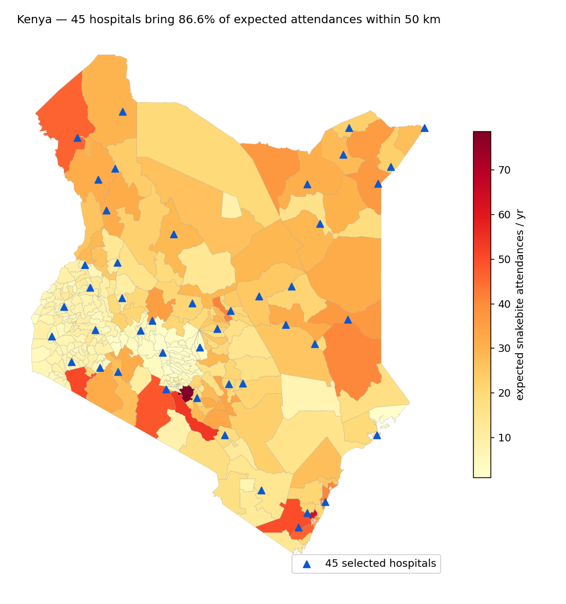
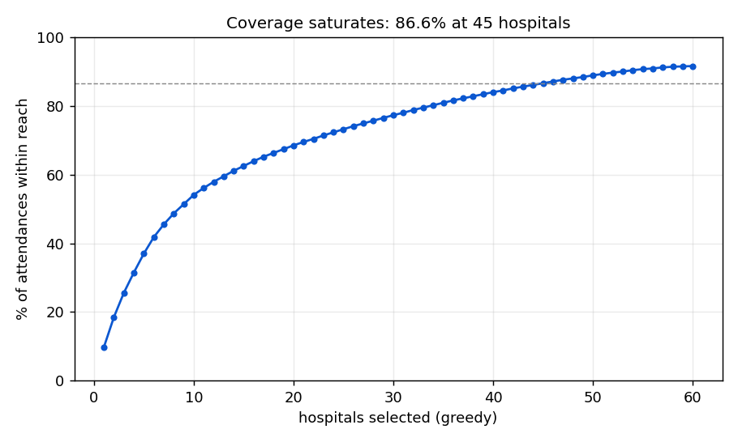

Ghana and Nigeria show a product-selection failure. Kenya has already run that triage: the Kenya Snakebite Research & Intervention Centre's preclinical assays — the work establishing the National Antivenom Quality Control Laboratory — found the two dominant products wanting, and, verbatim from that paper: "Both products were withdrawn from the Kenyan market in 2022 after performing poorly in our preclinical efficacy assays using Kenyan venoms [...] and failing to achieve a positive review in the WHO's risk-benefit assessment process" — the assays being the same group's earlier published work, cited in the QC-lab paper. (The two: VINS Snake Venom Antiserum African — 66.7% of stocking public facilities in the 2019–20 survey — and Inoserp, 33.3%.) What remains on the market: SAIMR Polyvalent — potent across the Big Five in the QC panel but costly ($315 per vial, framed by the paper as "of potential use" regionally — and with no Echis cover — and PANAF-Premium, WHO risk–benefit assessed and since approved by the Pharmacy and Poisons Board. AFRIVEN, VINS's reformulation, was also potent across the Big Five in the panel but "has yet to be commercialised in Kenya", so this plan never recommends it. Kenya's failure today is therefore availability and placement: antivenom in 44.7% of public facilities and 20.0% stocked out in a year (13.6 days mean) — 2019–20 survey figures, pre-withdrawal; today's picture is unlikely to be better. The product triage is done; CoverMap answers what follows — where the adequate products should sit, and in what quantity.
PANAF-Premium required for facilities serving Echis pyramidum counties (only marketed product whose E. pyramidum cover is WHO Schedule-2 listed - grade A under our published scheme); SAIMR Polyvalent the marketed alternative elsewhere (QC 2026: potent vs all Big Five; no Echis cover). AFRIVEN was potent vs the Big Five in the QC panel but has yet to be commercialised in Kenya - not recommendable. Inoserp excluded (failed 3 of 5; withdrawn 2022).
| Facility | County | Zone | Vials/yr | Recommended product |
|---|---|---|---|---|
| Mariakani District Hospital | Kilifi | COAST | 126 | PANAF-Premium (alt: SAIMR Polyvalent) |
| Bishop Kioko Catholic Hospital | Machakos | RIFT_SEMIARID | 145 | PANAF-Premium |
| Kanyakine District Hospital | Meru | RIFT_SEMIARID | 69 | PANAF-Premium (alt: SAIMR Polyvalent) |
| Gucha District Hospital | Kisii | WEST | 87 | PANAF-Premium (alt: SAIMR Polyvalent) |
| Ahmadiya Hospital | Kakamega | WEST | 88 | PANAF-Premium |
| Ngong Rapha Hospital | Kajiado | RIFT_SEMIARID | 91 | PANAF-Premium (alt: SAIMR Polyvalent) |
| Kwanza Sub County Hospital | Trans Nzoia | WEST | 48 | PANAF-Premium |
| Muhoroni Sub-District Hospital | Kisumu | WEST | 48 | PANAF-Premium (alt: SAIMR Polyvalent) |
| Kabarnet District Hospital | Baringo | RIFT_SEMIARID | 45 | PANAF-Premium |
| Kauwi Sub-District Hospital | Kitui | RIFT_SEMIARID | 56 | PANAF-Premium |
| Nyahururu District Hospital | Nyandarua | CENTRAL_HIGHLANDS | 28 | PANAF-Premium (alt: SAIMR Polyvalent) |
| Ololulunga District Hospital | Narok | RIFT_SEMIARID | 26 | PANAF-Premium (alt: SAIMR Polyvalent) |
| Kilifi District Hospital | Kilifi | COAST | 38 | PANAF-Premium (alt: SAIMR Polyvalent) |
| Maua Methodist Hospital | Meru | RIFT_SEMIARID | 60 | PANAF-Premium (alt: SAIMR Polyvalent) |
| Kianyaga Sub-District Hospital | Kirinyaga | CENTRAL_HIGHLANDS | 45 | PANAF-Premium (alt: SAIMR Polyvalent) |
| Katilu District Hospital | Turkana | ARID_NORTH | 25 | PANAF-Premium |
| Makindu District Hospital | Makueni | RIFT_SEMIARID | 23 | PANAF-Premium |
| Kakuma IRC Hospital | Turkana | ARID_NORTH | 20 | PANAF-Premium |
| Garissa Provincial General Hospital | Garissa | ARID_NORTH | 20 | PANAF-Premium |
| Bahati District Hospital | Nakuru | CENTRAL_HIGHLANDS | 26 | PANAF-Premium |
| Likuyani Sub-District Hospital | Kakamega | WEST | 40 | PANAF-Premium |
| Tot Sub-District Hospital | Elgeyo-Marakwet | RIFT_SEMIARID | 28 | PANAF-Premium |
| Mutitu Sub-District Hospital | Kitui | RIFT_SEMIARID | 17 | PANAF-Premium |
| Madiany Sub County Hospital | Siaya | WEST | 29 | PANAF-Premium (alt: SAIMR Polyvalent) |
| Dadaab Sub-District Hospital | Garissa | ARID_NORTH | 16 | PANAF-Premium |
| Elwak District Hospital | Mandera | ARID_NORTH | 16 | PANAF-Premium |
| Voi Moi District Hospital | Taita Taveta | COAST | 15 | PANAF-Premium |
| Kinango District Hospital | Kwale | COAST | 57 | PANAF-Premium (alt: SAIMR Polyvalent) |
| Sigor Sub-District Hospital | Bomet | WEST | 41 | PANAF-Premium (alt: SAIMR Polyvalent) |
| Balambala Sub-District Hospital | Garissa | ARID_NORTH | 14 | PANAF-Premium |
| Lorugum Sub County Hospital | Turkana | ARID_NORTH | 14 | PANAF-Premium |
| Buna Sub-District Hospital | Wajir | ARID_NORTH | 14 | PANAF-Premium |
| Lokitaung Sub County Hospital | Turkana | ARID_NORTH | 13 | PANAF-Premium |
| Griftu District Hospital | Wajir | ARID_NORTH | 13 | PANAF-Premium |
| Baragoi Sub-District Hospital | Samburu | ARID_NORTH | 13 | PANAF-Premium (alt: SAIMR Polyvalent) |
| Takaba District Hospital | Mandera | ARID_NORTH | 12 | PANAF-Premium |
| Mandera District Hospital | Mandera | ARID_NORTH | 12 | PANAF-Premium |
| Garbatulla District Hospital | Isiolo | ARID_NORTH | 11 | PANAF-Premium (alt: SAIMR Polyvalent) |
| Lodwar District Hospital | Turkana | ARID_NORTH | 10 | PANAF-Premium |
| Lafey Sub-District Hospital | Mandera | ARID_NORTH | 10 | PANAF-Premium |
| Banisa Sub County Hospital | Mandera | ARID_NORTH | 10 | PANAF-Premium |
| Lamu District Hospital | Lamu | COAST | 10 | PANAF-Premium (alt: SAIMR Polyvalent) |
| Modogashe Sub-County Hospital | Garissa | ARID_NORTH | 9 | PANAF-Premium |
| Engineer District Hospital | Nyandarua | CENTRAL_HIGHLANDS | 13 | PANAF-Premium (alt: SAIMR Polyvalent) |
| Doldol Sub District Hospital | Laikipia | RIFT_SEMIARID | 18 | PANAF-Premium (alt: SAIMR Polyvalent) |
| Zone | Rate /100k/yr | Status |
|---|---|---|
| ARID_NORTH | 20.0 | CONSTRUCTION |
| RIFT_SEMIARID | 15.0 | CONSTRUCTION |
| COAST | 15.0 | PARTIAL |
| WEST | 4.6 | SOURCED-ANCHORED |
| CENTRAL_HIGHLANDS | 2.0 | NOT_CONFIRMED |